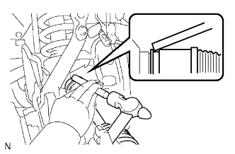

FRONT DRIVE SHAFT ASSEMBLY > INSTALLATION |
| 1. INSTALL FRONT DRIVE SHAFT ASSEMBLY LH |
Coat the lip of the differential oil seal with MP grease.
Coat the spline of the inboard joint shaft assembly with hypoid gear oil.
 |
Align the shaft splines and install the drive shaft with a brass bar and hammer.
| 2. INSTALL FRONT AXLE ASSEMBLY LH |
Install the front axle assembly (Click here).
| 3. ADD DIFFERENTIAL OIL |
 |
Add differential oil so that the oil level is between 0 to 5 mm (0 to 0.197 in.) from the bottom lip of the differential filler plug hole.
| Item | Oil Type and Viscosity |
| w/o LSD | Toyota Genuine Differential gear oil LT 75W-85 GL-5 or equivalent |
| w/ LSD | Toyota Genuine Differential gear oil LX 75W-85 GL-5 or equivalent |
| Item | Specified Condition |
| Standard | 4.15 to 4.25 liters (4.39 to 4.49 US qts., 3.66 to 3.74 Imp. qts.) |
| w/ LSD | 4.10 to 4.20 liters (4.34 to 4.43 US qts., 3.60 to 3.69 Imp. qts.) |
| w/ Differential lock |
for Front Differential:
Using a 10 mm hexagon wrench, install a new gasket and the filler plug.
Install the engine under cover.
for Rear Differential:
Install a new gasket and the filler plug.
| 4. CHECK SPEED SENSOR SIGNAL |
Check the speed sensor signal (Click here).
| 5. INSPECT AND ADJUST FRONT WHEEL ALIGNMENT |
Inspect and adjust the front wheel alignment (Click here).
| 6. ADJUST HEADLIGHT ASSEMBLY |
for Standard:
Adjust the headlight assembly (Click here).
for HID Headlight:
Adjust the headlight assembly (Click here).
| 7. INSTALL FRONT FENDER SPLASH SHIELD SUB-ASSEMBLY LH |
 |
Push in the clip indicated by the arrow in the illustration to install the fender splash shield.
Install the 3 bolts and screw.
| 8. INSTALL FRONT FENDER SPLASH SHIELD SUB-ASSEMBLY RH |
| 9. INSTALL NO. 2 ENGINE UNDER COVER |
 |
Install the No. 2 engine under cover with the 2 bolts.
| 10. INSTALL NO. 1 ENGINE UNDER COVER SUB-ASSEMBLY |
 |
Install the No. 1 engine under cover with the 10 bolts.